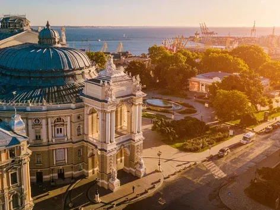

Місце народження: 25 серпня, 2005 року, м. Кременчук
Одеса --- місто в Україні. Третє за кількістю мешканців місто країни після Києва та Харкова. Розташоване на узбережжі Чорного моря. Найбільший морський торговий порт держави. Основа економіки --- транспортні перевезення, машинобудівна, хімічна, нафтопереробна, харчова та легка промисловості. Має 37 закладів вищої освіти, шість театрів, вісім кінотеатрів, філармонія, цирк, музеї, галереї тощо.
